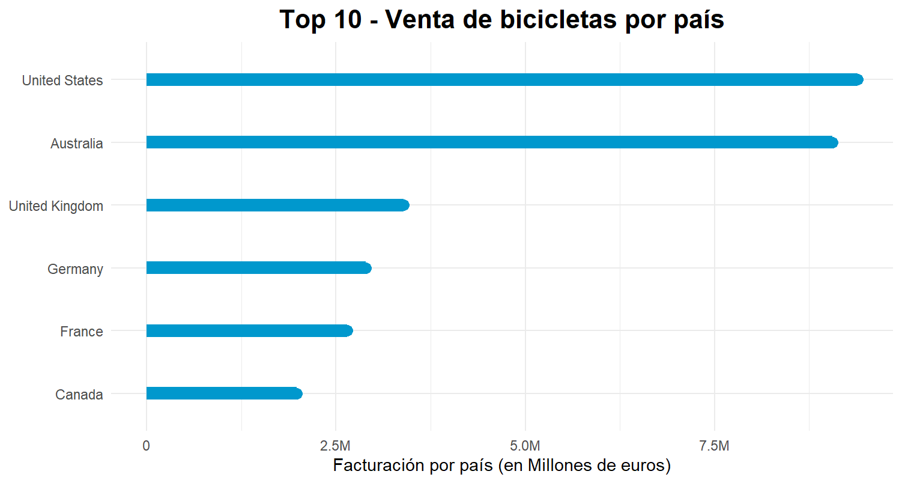

Análisis AdventureWorks
Proyecto Transversal: Gestión de Proyectos de Inteligencia de Negocio
Pregunta 1: Facturación por País
¿En qué país se concentra la mayor parte de la facturación?

La mayor parte de la facturación se concentra en Estados Unidos, con un total cercano a los 9,5 millones de euros.
Código R utilizado
ventas_por_pais <- datos_Clientes_Clean %>%
group_by(Country_clean) %>%
summarize(Venta = sum(TotalAmount)) %>%
arrange(desc(Venta))
# Top 10 gráfico
... (resto del código R correspondiente)
Pregunta 2: Tendencia de Ventas
¿Qué tendencia tienen las ventas de la empresa?


Las ventas muestran una tendencia general creciente, con una estacionalidad clara en ciertos períodos del año.
Código R utilizado
# Agrupación por mes y aplicación de filtro HP para tendencia
ventasmes <- datos_ventas %>%
group_by(mes) %>%
summarise(ventas = sum(Sales))
ventasmensuales <- ts(ventasmes$ventas, start = c(2011, 5), frequency = 12)
...
Pregunta 3: Precios por Categoría y Color
¿Cuál es el precio medio por categoría y color de producto?


Colores como rojo, plata y amarillo tienen precios más altos. Se identifican diferencias de precio según el color del producto.
Código R utilizado
productos_precio_medio <- datos_productos %>%
group_by(Name) %>%
summarize(precio_medio = mean(UnitPrice))
# Boxplot por color
... (resto del código R correspondiente)
Pregunta 4: Perfil de Clientes
¿Qué características tienen los compradores de bicicletas?

El 49,4% de los clientes compran bicicleta. La edad promedio es de 57,3 años y hay una ligera mayoría de mujeres compradoras.
Código R utilizado
table(Clientes$BikePurchase)
prop.table(table(Clientes$BikePurchase))
# Modelo de regresión
modelo <- glm(BikePurchase ~ Age + Gender + ..., family = "binomial")
...